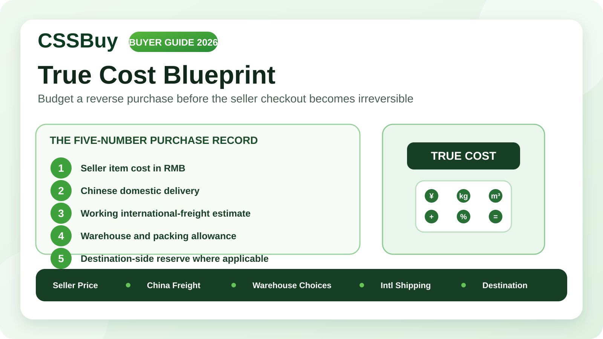

CSSBuy True Cost Guide 2026: Budget a Reverse Purchase Before Checkout
A cheap listing is not the same thing as a cheap reverse purchase. The number beside a Taobao, Tmall, 1688 or other Chinese marketplace item is only the first visible cost in a chain that may also include Chinese domestic delivery, warehouse decisions, optional packing, international freight, route-specific surcharges and destination-side taxes or customs charges. CSSBuy’s current workflow makes that chain clear: the domestic purchase happens first, then the international parcel is submitted and priced later.
That separation is useful, but it creates a budgeting trap. Buyers often compare products by seller price, then discover the meaningful cost difference only after the goods reach the warehouse. By that point, the purchase is already made.
A better approach is to build a “true-cost envelope” before you pay. The goal is not to predict the final figure to the cent. The goal is to know which variables can still move and how much room they have to move.
Start with the cost that belongs to the seller
CSSBuy’s Buy For Me process currently separates the first payment from international shipping. At the purchase stage, the buyer pays for the item and the Chinese local delivery charge. CSSBuy then places the order with the seller. So the first budget line should never be just “product price.” It should be “seller-side landed cost to the warehouse.”
For a multi-seller order, domestic freight matters because each seller may charge separately. For 1688, the calculation can change again because many listings have minimum order quantities. A unit price that looks excellent at one piece may not be available at one piece.
Before purchase, record the exact item price, quantity and domestic shipping fee. If the listing has tiered pricing, write down the quantity threshold that produced your price. If you use Expert Buy or a manual order, CSSBuy’s current form separately asks for price, domestic shipping and quantity. Treat those fields as a budgeting model, not clerical paperwork.
Do not treat currency display as a permanent quote
CSSBuy currently supports multiple currencies and several payment methods, while its newer site highlights real-time exchange rates. That convenience does not turn a marketplace price into a fixed home-currency cost.
Keep the RMB amount for the item and Chinese delivery as your base record. Also note the approximate amount in your own currency when you fund the order. If you compare two sellers on different days, compare their RMB economics first so exchange-rate movement does not disguise whether the seller itself was actually cheaper.
Estimate the parcel before the parcel exists
The largest uncertainty in many reverse purchases is international freight. CSSBuy’s current shipping calculator explains why: many lines compare actual weight with volumetric weight and charge whichever is higher. The volumetric formula and divisor vary by line.
A light but bulky object can therefore cost more to ship than a compact heavier item. Shoes with boxes, puffer jackets, large bags, packaging-heavy collectibles and oversized accessories can all create this effect.
Before ordering, create a rough parcel profile. Ask: Is the item dense or bulky? Is the original packaging important? Is the item compressible? Is it likely to ship with other goods?
You do not need warehouse-perfect measurements. You need enough information to recognize bad shipping geometry. If a product is cheap only because you are ignoring the volume it creates, it is not actually cheap.
Separate product value from packaging value
CSSBuy’s current service information lists options such as packaging removal, vacuum packaging and reinforced packaging. Packaging is not neutral: it can either protect value or create freight cost.
For clothing, retail bags and excess air may have little value. Removing unnecessary packaging or using compression can reduce volume. For a collectible shoe box, structured handbag or fragile object, packaging may be part of what you are buying.
Classify every product as packaging disposable, packaging optional, or packaging essential. This makes parcel submission easier and prevents the common mistake of requesting maximum protection and maximum volume reduction at the same time. Those goals can conflict.
Add a route-eligibility reserve
CSSBuy’s current shipping guidance says some products can be restricted on certain delivery methods. Its estimate page specifically warns that designer-brand products, liquids, powders and batteries may have fewer available routes. The Buy For Me process says CSSBuy presents recommended delivery types when restrictions apply.
A restricted item can affect more than its own shipping. If you combine it with ordinary goods, the entire parcel may be limited to routes that accept the most restrictive item inside.
Before buying a sensitive item, do not ask only, “Can CSSBuy ship this?” Ask, “Will this item remove the routes I planned to use for the rest of my haul?” If that may happen, budget for a separate parcel.
Understand the international payment as a deposit
CSSBuy’s Buy For Me instructions say the international shipping payment is initially calculated as a deposit based on estimated product weight, the selected shipping method and destination. The final shipping fee is based on package size and weight verified by the shipping company. If the final amount differs from the deposit, the difference is reconciled through the CSSBuy account.
This means the first international figure is not the same kind of number as the seller’s item price. It is still exposed to final packing and carrier verification.
Keep a shipping reserve. A parcel close to a size limit, weight step or volumetric threshold deserves more reserve than a compact parcel comfortably inside the rules.
Use consolidation to reduce repeated first-weight costs
CSSBuy offers package consolidation, so separate warehouse items can be combined into a larger international parcel. Consolidation can help because many routes use a first-weight fee and then charge additional weight in steps.
If three compatible items ship separately, you may pay the expensive first-weight component three times. If they are combined, you may pay it once and then add continuation weight.
But consolidation is not automatically cheaper. A larger parcel can cross a dimensional threshold, become volumetric, exceed a route limit or combine a restricted product with ordinary goods. The right question is not “Can these items fit in one box?” It is “Do these items belong in the same shipping economics?”
Build groups by compatibility. Soft clothing may belong together. Fragile objects may need different protection. Sensitive goods may deserve their own route.
Budget warehouse time as decision space
CSSBuy currently advertises free warehouse storage, and its public product pages distinguish ordinary and sensitive storage periods. Storage is useful because it gives you time to wait for other sellers, compare parcel combinations and resolve QC issues before international shipment.
Give every warehouse item a planned release condition: ship when all sellers arrive, when the parcel reaches a target weight, before an internal deadline, or immediately if a restricted item removes the preferred line.
A rule turns storage into flexibility. No rule turns storage into delay.
Do not confuse customs risk with freight price
CSSBuy’s Buy For Me guidance notes that international shipping can involve taxes, customs inspection, delays, confiscation, damage or loss, while third-party logistics companies and customs are outside CSSBuy’s direct control. Those destination-side risks belong in a different budget category from freight.
Do not invent a customs figure. Instead, make a destination reserve based on the rules where you live and the type and value of goods you are importing. Keep that reserve outside the shopping budget so you do not accidentally spend it on another item.
Create a five-number purchase record
The simplest way to control a reverse purchase is to keep five numbers from the beginning.
Number one is seller item cost in RMB. Number two is Chinese domestic delivery. Number three is your working international-freight estimate. Number four is a warehouse-and-packing allowance for optional services or changes in parcel construction. Number five is a destination reserve for taxes, duties or other import-side costs where applicable.
Not all five numbers will necessarily become charges. The point is that all five can influence what the purchase really costs.
When comparing two products, compare the five-number profiles. A ¥30 item in a large rigid box can be worse value than a ¥50 compact item if the first consumes expensive volumetric space. A low-cost liquid can become expensive if it forces a special route. A slightly more expensive seller can be cheaper overall if domestic shipping is lower and packaging is more efficient.
Use CSSBuy’s workflow as budget checkpoints
At checkout, confirm seller price, quantity and Chinese freight. During purchase, use the order note if CSSBuy needs clarification. At warehouse arrival, inspect the item before spending more money on it. Before parcel submission, check compatibility, packaging and route restrictions. At international payment, treat the quote as a deposit that can still be reconciled after final verification. After dispatch, keep destination-side costs separate from the agent-side transaction.
That sequence is more useful than searching for one universal “CSSBuy fee.” A reverse purchase is a chain of decisions where different costs become knowable at different times.
The real saving is avoiding irreversible mistakes
The most expensive reverse-purchasing errors rarely come from a few yuan of price difference. They come from buying the wrong quantity, ignoring domestic freight, choosing a bulky item with poor shipping geometry, mixing restricted and ordinary goods, keeping packaging that has no value, or assuming the first international estimate is final.
A true-cost budget prevents those mistakes because it forces you to ask logistics questions while you can still choose a different product, seller or parcel plan.
Use the seller price to decide whether an item is interesting. Use the true-cost envelope to decide whether it is worth buying. That is the difference between finding a cheap listing and building a cost-controlled CSSBuy purchase.